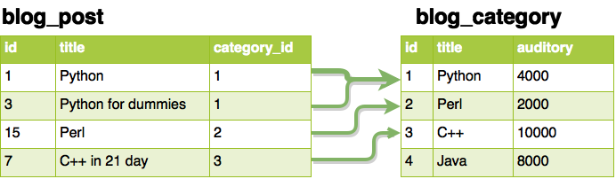

Реализация в СУБД

Данные хранятся в виде таблиц. У каждой таблицы фиксированное число столбцов. Все данные в столбце одного типа.
Основная задача проектирования - сокращение избыточности и дублирования данных.
Существуют формальные правила проверки схемы базы данных на «правильность» - нормальные формы базы данных.
Полное интерфейса для работы с СУБД в PEP-0249
./manage.py validate - проверить структуру моделей./manage.py syncdb - создать таблицы в базе (1 раз)./manage.py shell - запустить python shell./manage.py dbshell - запустить клиент базы данныхORM - Object relational mapping - библиотек предоставляющая объектно-ориентированный интерфейс к реляционной базе данных. Django Models - библиотека ORM в Djnago.
| Django | SQL |
|---|---|
| класс Модели | Таблица |
| объект модели | строка таблицы |
| QuerySet | запрос |
| Django | MySQL |
|---|---|
| CharField | VARCHAR(N) |
| EmailField | |
| TextField | LONGTEXT |
| BooleanField | TINYINT(1) |
| IntegerField | INT(11) |
| DateField | DATE |
| DateTimeField | DATETIME |
blank - поле может быть пустымnull - при этом хранится в базе как NULLmax_length - максимальная длина поляprimary_key - это поле - первичный ключunique - поле уникальноdb_index - для этого поля нужен индекс в базеdefault - значение по-умолчаниюchoices - варианты значений
ForeignKey, OneToOneField
RESTRICT → models.PROTECTCASCADE → models.CASCADESET NULL → models.SET_NULLNO ACTION → models.DO_NOTHING